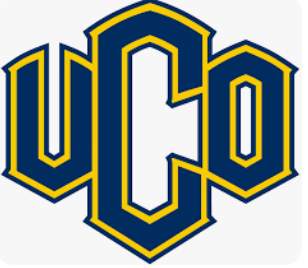
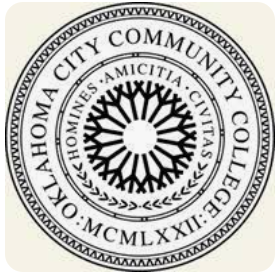

Johnny R Lara

Summary
About Me
Contact Me
Education

B.B.A / International Business
“Minor” Spanish, UNIVERSITY OF CENTRAL OKLAHOMA
Graduated with a 3.1 GPA, as well a Studied abroad in Almeria, Spain
Associates in Science & Math
OKLAHOMA CITY COMMUNITY COLLEGE
Work Experience
Senior Assistant Processor, DXC TECHNOLOGY
June 2016/Present
I make sure the correct information and data needed to submit medical claims such as Sooner care,
and Medicaid, as well as interact with OHCA Members on a daily bias.
Vet Assistant, Verden Vetenary Clinic
February 2012/June 2016
I help get the medication for the certain prepared as well help with paperwork for the animal.
Shift Manager, MCDONALD’S RESTAURANT
November 2007/January 2012
Planning for each shift, monitoring performance during the shift, taking action to ensure the team
is meeting McDonald's standards, monitoring safety, security, and profitability, and communicating with
the next Shift Manager
Skills
- Strong customer service experience
- Work effectively in a team
- Recruting
- Proficient in all Microsoft applications
- Experience in working on Soonercare, Medicare claims
- Outside the box thinker
- Fluent in Spanish
- Junior level Coding(Html)
Birthday-invite project
Movie Rankings
Other
Achievements
-Employee of the Month (July-November) MCDONALD’S 2008
Activities

Reprsentative of a Musical Band (Conjunto Sinley)
2007 - Present
- Calle Dos Cinco Event (OKC Hispanic Cultural development) Voluteer 2013
- Assistant youth soccer coach at Chickasha youth soccer 2015
- Hobbies
List